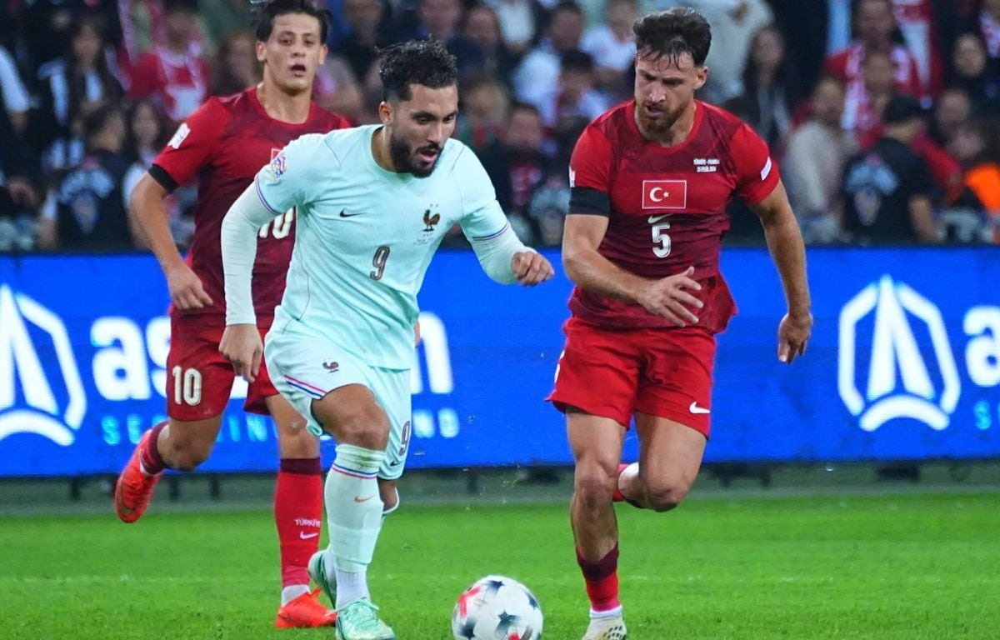

Football
Cherki brille avec les Bleus pour les débuts de Zidane
Pour ses grands débuts sur le banc des Bleus, Zinedine Zidane a aligné Rayan Cherki aux côtés de Michael Olise, un pari gagnant contre la Turquie.